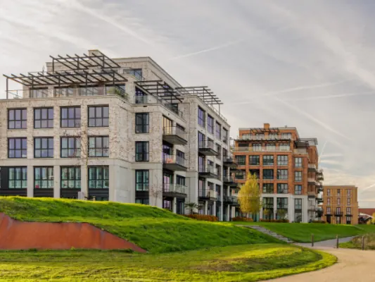
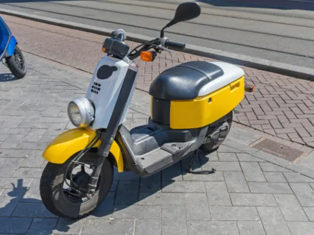
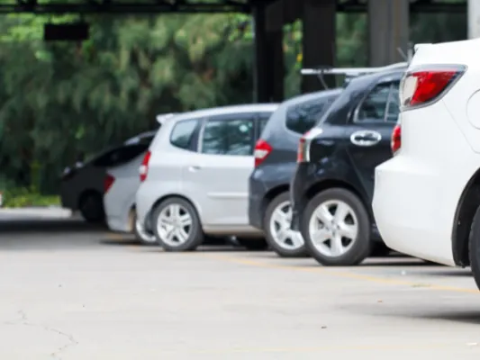
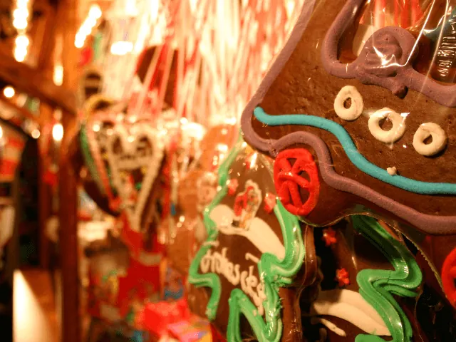

Zien en doen in Nijmegen
Nijmegen is de oudste stad van Nederland, met Romeinse sporen, een levendige binnenstad aan de Waal en veel groen eromheen. Hier vind je de bezienswaardigheden, musea, parken, uitjes en evenementen die je niet wilt missen.
Dagprogramma's
Weet je niet waar je moet beginnen? Volg een van deze programma's.

24 uur in Nijmegen
Eén dag: het Valkhof, de Stevenskerk, de Waalkade en 's avonds een café.
Lees meer
Een weekend Nijmegen
Twee dagen: de stad, de Ooijpolder en de heuvels van Groesbeek.
Lees meer
Nijmegen bij regen
Musea, binnenuitjes en cafés voor als het slecht weer is.
Lees meer
Een dag met kinderen
Parken, musea, zwemmen en uit eten met het hele gezin.
Lees meerBezienswaardigheden
De plekken die elke bezoeker van Nijmegen gezien moet hebben.
Het verhaal van Nijmegen
Romeinen, keizers en de oorlog: de geschiedenis van de oudste stad in het kort.
Lees meer
Kaart van Nijmegen
Bezienswaardigheden, parken, musea, theaters, hotels, parkeergarages en het station op één kaart.
Lees meer
Wat te doen in Nijmegen
Wat te doen in Nijmegen? De mooiste bezienswaardigheden, musea, parken en natuur, tips bij slecht weer en de evenementen door het jaar.
Lees meer
De Stevenskerk in Nijmegen
Bezoek de Stevenskerk in Nijmegen: openingstijden, de Stevenstoren beklimmen (tijden en prijs), het König-orgel, de geschiedenis en waar je parkeert.
Lees meerValkhof en Hunnerpark in Nijmegen
Alles over het Valkhof in Nijmegen: het vernieuwde Valkhof Museum (tijden en prijzen), het Valkhofpark met de Sint-Nicolaaskapel, het Hunnerpark…
Lees meer
De Waalkade in Nijmegen
De Waalkade in Nijmegen: terrassen aan de Waal, Museum De Bastei en Velorama, de Vierdaagsefeesten, de Waalbrug uit 1936, hoogwater en parkeren.
Lees meer
De Bastei in Nijmegen
Bezoek De Bastei aan de Waalkade in Nijmegen: openingstijden, entreeprijzen, de Stratemakerstoren, Romeinse muren, natuur van de Waal en hoe je er…
Lees meerWat zijn de meest bekende kerken in Nijmegen?
Van de Stevenskerk tot de Dominicuskerk: ontdek de bekendste kerken van Nijmegen, hun geschiedenis en wat je er kunt bezoeken.
Lees meer
Nijmegen: de oudste stad met de jongste energie
Waarom mensen naar Nijmegen verhuizen en er niet meer weg willen: studenten, cultuur, natuur en de sfeer van de oudste stad.
Lees meer
De beste fotospots in Nijmegen
Op zoek naar de perfecte foto? Dit zijn de mooiste fotospots in Nijmegen, van de Ooijpolder en de skyline tot het Besiendershuis en Kronenburgpark.
Lees meerMusea en geschiedenis
Van de Romeinen tot de Tweede Wereldoorlog: in en rond Nijmegen kom je de geschiedenis overal tegen.
Musea in Nijmegen
Welke musea zijn er in Nijmegen en omgeving? Van Museum Het Valkhof tot het Vrijheidsmuseum en de bekendste kerken: cultuur en historie op een rij.
Lees meer
Het Vrijheidsmuseum in Groesbeek
Bezoek het Vrijheidsmuseum in Groesbeek bij Nijmegen: openingstijden, entreeprijzen, wat je ziet, de bus vanaf station Nijmegen en gratis parkeren.
Lees meer
Museumpark Orientalis
Museumpark Orientalis bij Nijmegen: openingstijden en seizoen, toegangsprijzen, het Feest van Licht, wat je ziet in het park en hoe je er komt.
Lees meerNationaal Fietsmuseum Velorama
Bezoek het Nationaal Fietsmuseum Velorama aan de Waalkade in Nijmegen: openingstijden, entreeprijzen, de fiets van Wim van Est, hoge bi's en hoe…
Lees meerParken, natuur en routes
Stadsparken om de hoek en heuvels, bossen en uiterwaarden net buiten de stad.

Routes in en rond Nijmegen
Wandel- en fietsroutes door de stad, de polder en de heuvels.
Lees meerWandelen in Nijmegen
Wandelen in Nijmegen: stadswandelingen, het rondje over de Waal naar Veur-Lent, Heumensoord, de Mookerheide, de Ooijpolder en de Walk of Wisdom.…
Lees meerGoffertpark Nijmegen
Alles over het Goffertpark in Nijmegen: de kinderboerderij, het openluchttheater, het Goffertbad, concerten en festivals, eten en drinken en hoe…
Lees meer
Kronenburgerpark Nijmegen
Alles over het Kronenburgerpark in Nijmegen: de Kruittoren en stadsmuur, de hertenkamp en speeltuin, het keukenmuseum, evenementen en hoe je er komt.
Lees meer
Ooijpolder bij Nijmegen
Alles over de Ooijpolder bij Nijmegen: wandel- en fietsroutes, de Bisonbaai, de Duivelsberg, dieren, eten en drinken en waar je parkeert.
Lees meerHeumensoord
Wandelen in Heumensoord bij Nijmegen: de routes van 2, 5 en 6 km, parkeren aan de Beukenlaan, de heide met schapen, de beukenlanen en het…
Lees meer
Mookerheide bij Nijmegen
Wandelen op de Mookerheide bij Nijmegen: routes van 3 tot 17 km, Jachtslot de Mookerheide, de Sint-Jansberg, gratis parkeren, horeca en geschiedenis.
Lees meer
De andere rivier die door Nijmegen stroomt
Iedereen kent de Waal, maar er stroomt nog een rivier door Nijmegen. Ontdek welke, en waar je haar in de stad tegenkomt.
Lees meerMet kinderen
Uitjes, zwemmen en uit eten met het hele gezin.

Nijmegen met kinderen
Nijmegen met kinderen: parken met speeltuin en hertenkamp, het strand aan de Spiegelwaal, musea voor kinderen, zwembaden en tips bij regen. Alle…
Lees meerZwembaden in Nijmegen
Alle zwembaden in Nijmegen op een rij: Nijmegen-West, Erica Terpstra en Dukenburg, het Goffertbad, zwemplassen in de buurt, prijzen en tips met…
Lees meer
Uit eten met kinderen in Nijmegen? Deze locaties mag je niet missen
Uit eten met kleine kinderen? Dit zijn de leukste kindvriendelijke restaurants in Nijmegen, met speelhoek, kindermenu of buitenruimte.
Lees meer
Schaatsen in Nijmegen
Schaatsen in Nijmegen doe je bij Triavium in Dukenburg: drie overdekte ijsbanen. Met prijzen voor 2026-2027, schaatsverhuur, parkeren en…
Lees meerUitjes en actief
Iets anders dan anders: het water op, de stad rond of samen met collega's eropuit.
5x een bijzonder uitje in Nijmegen
Iets leuks doen in Nijmegen? Dit zijn 5 bijzondere uitjes in en rond de stad, voor een dagje uit met vrienden, familie of collega's.
Lees meer
Over het water Nijmegen verkennen? Zo doe je dat!
Nijmegen vanaf het water ontdekken? Zo kun je de Waal op, met een sloep of bootje huren, voor een dagje uit met het gezin of een bedrijfsuitje.
Lees meer
Nijmegen op de scooter: de leukste routes en handige weetjes
De stad en omgeving verkennen op de scooter? De leukste routes rond Nijmegen en handige weetjes over parkeren en regels.
Lees meer
Teamuitje Nijmegen: spanning, natuur en culinair genieten
Een teamuitje in Nijmegen organiseren? Ideeën vol spanning, natuur en culinair genieten om je collega's dichter bij elkaar te brengen.
Lees meer
Ontdek Nijmegen door de ogen van een local
De favoriete plekken van een Nijmegenaar: verborgen pareltjes, gezellige straatjes en tips die je niet in de reisgids vindt.
Lees meerEten, uitgaan en winkelen
Waar je goed eet, gezellig een biertje drinkt en leuk winkelt.

Restaurants in Nijmegen
Uit eten in Nijmegen? De beste restaurants per keuken op een rij, van Italiaans en Thais tot vegan, high tea en uit eten met kinderen.
Lees meer
Cafés in Nijmegen
De leukste cafés van Nijmegen op een rij: historische bruine kroegen, biercafés met lokale brouwers, eetcafés en gezellige cafés in de wijken.
Lees meer
Lekker uitgaan in Nijmegen, hier doe je dat
Een avondje stappen in Nijmegen? Dit zijn de leukste plekken om uit te gaan, van kroegen op de Waalkade tot dansen en live muziek.
Lees meer
Winkelen in Nijmegen
Een dagje winkelen in Nijmegen? Tips voor kringloopwinkels, bloemisten, parfumerieën en juweliers, plus waar je parkeert en wanneer de winkels…
Lees meerMarkten in en om Nijmegen
Wist je dat er bijna elke dag wel een markt is in Nijmegen of omgeving? Op deze pagina staan alle markten op een rij
Lees meerOpeningstijden centrum Nijmegen
Ontdek het bruisende centrum van Nijmegen met zijn historische gebouwen, gezellige winkels en vele restaurants en cafés.
Lees meerHet jaar rond
De grote momenten van het Nijmeegse jaar. Wat er deze week te doen is, staat in de agenda.

Agenda Nijmegen
Alle evenementen in Nijmegen en omgeving: concerten, theater, markten, exposities en festivals.
Lees meerSint Maarten in Nijmegen
Sint Maarten is op woensdag 11 november 2026. Lampionnenoptochten in Nijmegen en omgeving, het verhaal van Sint Martinus, de liedjes en tips voor…
Lees meer
Kerstmarkten in Nijmegen 2026
Alle kerstmarkten in en rond Nijmegen in 2026: Winterburg, de Nijmeegse Winterweken, markten in de wijken en de regio, en Kleef en Goch over de…
Lees meer
Vierdaagse 2027: data, inschrijven en routes
Nijmeegse Vierdaagse 2027 van 20 t/m 23 juli: wanneer de inschrijving opengaat, wat het kost, de afstanden, de routes per dag en hoe je je nu al…
Lees meer
Vierdaagsefeesten Nijmegen 2027
Vierdaagsefeesten (Zomerfeesten) 2027 in Nijmegen: 17 t/m 23 juli. Alle podia en locaties, tijden, Roze Woensdag, polsbandje, bereikbaarheid en…
Lees meerKoningsdag in Nijmegen
Koningsdag in Nijmegen op 27 april 2027: de vrijmarkt in het Goffertpark, festival Code Oranje in het Hunnerpark, winkels, Koningsnacht en tips.
Lees meerCarnaval in Nijmegen: Knotsenburg
Carnaval in Nijmegen (Knotsenburg) van 6 t/m 9 februari 2027: de sleuteloverdracht, de stadsoptocht, de kroegentocht, kindermiddagen en waar de…
Lees meerBevrijdingsfestival Nijmegen 2027
Bevrijdingsfestival Nijmegen op 5 mei 2027 in het Hunnerpark: tijden, tickets, podia, het Vrijheidsvuur, regels, bereikbaarheid en meer rond 4 en…
Lees meer
De Zevenheuvelenloop
Alles over de Zevenheuvelenloop in Nijmegen: 15 november 2026, het parcours over de heuvels van Berg en Dal, de Zevenheuvelennacht en de Mini, de…
Lees meerFestivals in Nijmegen
Alle festivals in Nijmegen en omgeving op een rij: Vierdaagsefeesten, Valkhof Festival, Bevrijdingsfestival, Code Oranje, Music Meeting, Go Short…
Lees meer